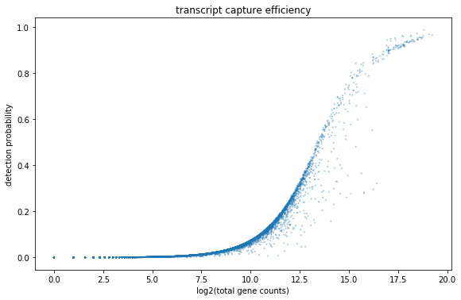
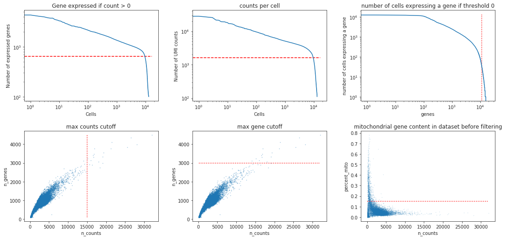
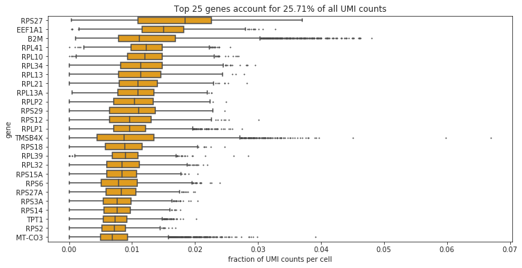
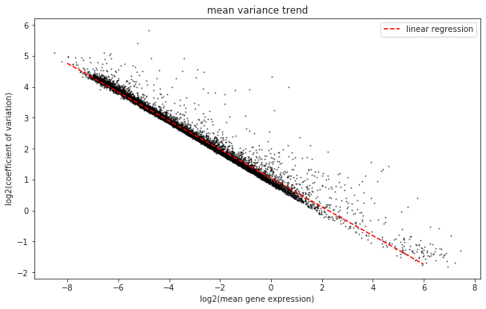
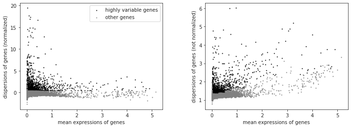

hands on tutorial¶
[1]:
#import necessary python packages
import scanpy as sc #software suite of tools for single-cell analysis in python
import besca as bc #internal BEDA package for single cell analysis
import matplotlib.pyplot as plt
import seaborn as sns
import pandas as pd
import numpy as np
import scipy
sc.logging.print_versions() #output an overview of the software versions that are loaded
scanpy==1.4.5.1 anndata==0.7.1 umap==0.3.10 numpy==1.16.2 scipy==1.4.1 pandas==0.24.1 scikit-learn==0.22.1 statsmodels==0.11.1 python-igraph==0.7.1 louvain==0.6.1
[2]:
from IPython.display import HTML
task = "<style>div.task { background-color: #ffc299; border-color: #ff944d; border-left: 7px solid #ff944d; padding: 1em;} </style>"
HTML(task)
[2]:
[3]:
tag = "<style>div.tag { background-color: #99ccff; border-color: #1a8cff; border-left: 7px solid #1a8cff; padding: 1em;} </style>"
HTML(tag)
[3]:
[4]:
FAIR = "<style>div.fair { background-color: #d2f7ec; border-color: #d2f7ec; border-left: 7px solid #2fbc94; padding: 1em;} </style>"
HTML(FAIR)
[4]:
Dataset Loading¶
[5]:
#adata = sc.read(filepath)
adata = bc.datasets.pbmc_storage_raw()
<p>1. How many cells does this dataset contain? </p>
<p>2. How many genes does this dataset contain? </p>
<p>3. Which categories of sample annotation are present? </p>
<p>4. How many cells are from each Donor? Is it an equal distribution? </p>
<p>5. How many cells are from each Storage Condition? Is it an equal distribution? Do you think this is a random stochastic result? </p>
[6]:
## solution 1 and 2
adata
[6]:
AnnData object with n_obs × n_vars = 13066 × 19883
obs: 'CELL', 'CONDITION', 'experiment', 'sample_type', 'storage_condition', 'donor', 'batch'
var: 'ENSEMBL', 'SYMBOL'
[7]:
## solution 3
adata.obs.head(5)
[7]:
| CELL | CONDITION | experiment | sample_type | storage_condition | donor | batch | |
|---|---|---|---|---|---|---|---|
| index | |||||||
| 6.6K_inhouse_Donor_1_FRESH.AACCGCGAGGGTCTCC-1 | 6.6K_inhouse_Donor_1_FRESH.AACCGCGAGGGTCTCC-1 | PBMC_healthy | 6.6k_healthy_pbmc_storage_effects_inhouse | PBMC | fresh | Donor_1 | flowcell1 |
| 6.6K_inhouse_Donor_3A_24h_RT.GGCAATTCAGACGCCT-1 | 6.6K_inhouse_Donor_3A_24h_RT.GGCAATTCAGACGCCT-1 | PBMC_healthy | 6.6k_healthy_pbmc_storage_effects_inhouse | PBMC | 24h_RT | Donor_3A | flowcell1 |
| 6.6K_inhouse_Donor_2_FROZEN.CGGCTAGAGCTATGCT-1 | 6.6K_inhouse_Donor_2_FROZEN.CGGCTAGAGCTATGCT-1 | PBMC_healthy | 6.6k_healthy_pbmc_storage_effects_inhouse | PBMC | frozen | Donor_2 | flowcell1 |
| 6.6K_inhouse_Donor_2_FRESH.CTCGGGATCCTATGTT-1 | 6.6K_inhouse_Donor_2_FRESH.CTCGGGATCCTATGTT-1 | PBMC_healthy | 6.6k_healthy_pbmc_storage_effects_inhouse | PBMC | fresh | Donor_2 | flowcell1 |
| 6.6K_inhouse_Donor_3A_FROZEN.GCGCGATAGTTCGATC-1 | 6.6K_inhouse_Donor_3A_FROZEN.GCGCGATAGTTCGATC-1 | PBMC_healthy | 6.6k_healthy_pbmc_storage_effects_inhouse | PBMC | frozen | Donor_3A | flowcell1 |
[8]:
## solution 4
adata.obs.donor.value_counts()
[8]:
Donor_3A 4652
Donor_1 4562
Donor_2 3852
Name: donor, dtype: int64
[9]:
## solution 5
adata.obs.storage_condition.value_counts()
[9]:
fresh 5111
24h_RT 5062
frozen 2893
Name: storage_condition, dtype: int64
Quality Control¶
[10]:
fig, ax = plt.subplots(1)
fig.set_figwidth(8)
fig.set_figheight(5)
fig.tight_layout()
bc.pl.transcript_capture_efficiency(adata,ax=ax)

[11]:
fig = bc.pl.librarysize_overview(adata, bins=100)

Preprocessing¶
<p> 6. what do you think are reasonable cutoffs for this dataset? Why do we filter for these particular cutoffs? </p>
[12]:
## solution 6
min_genes = 650
min_counts= 1600
min_cells = 30
max_genes = 3000
max_counts = 15000
max_mito = 0.15
[13]:
fig, ((ax1, ax2, ax3), (ax4, ax5, ax6))= plt.subplots(ncols=3, nrows=2)
fig.set_figwidth(16)
fig.set_figheight(8)
fig.tight_layout(pad=4.5)
bc.pl.kp_genes(adata, min_genes=min_genes, ax = ax1)
bc.pl.kp_counts(adata, min_counts = min_counts, ax = ax2)
bc.pl.kp_cells(adata, min_cells=min_cells, ax = ax3)
bc.pl.max_counts(adata, max_counts=max_counts, ax = ax4)
bc.pl.max_genes(adata, max_genes = max_genes, ax = ax5)
bc.pl.max_mito(adata, max_mito=max_mito, annotation_type='SYMBOL', species='human', ax = ax6)
adding percent mitochondrial genes to dataframe for species human

[14]:
adata = bc.pp.filter(adata, max_counts=max_counts, max_genes = max_genes, max_mito = max_mito, min_genes = min_genes, min_cells = min_cells, min_counts = min_counts)
started with 13066 total cells and 19883 total genes
removed 16 cells that expressed more than 3000 genes
removed 3492 cells that did not express at least 650 genes
removed 4 cells that had more than 15000 counts
removed 210 cells that did not have at least 1600 counts
removed 8383 genes that were not expressed in at least 30 cells
removed 29 cells that expressed 15.0 percent mitochondrial genes or more
finished with 9315 total cells and 11500 total genes
<p> 7. Were there differences in viability between Donors? </p>
[15]:
## Solution 7
adata.obs.donor.value_counts()
[15]:
Donor_3A 3814
Donor_1 2879
Donor_2 2622
Name: donor, dtype: int64
[16]:
bc.pl.top_genes_counts(adata=adata, top_n=25, ax=None)
[16]:
<matplotlib.axes._subplots.AxesSubplot at 0x2aaafbe5a358>

<p> 8. Which are the most commonly expressed genes? Is this what you would expect? </p>
Normalization¶
[17]:
#normalize per cell
sc.pp.normalize_per_cell(adata, counts_per_cell_after=1e4)
#save a copy (logarithmized for better understanding of values) to adata.raw
adata.raw = sc.pp.log1p(adata, copy= True)
<p> write out cp10k values for loading into database</p>
<p> `bc.st.export_cp10k(adata=adata, basepath='FILEPATH_TO_FOLDER_CONTAINING_RAW_SUBFOLDER')` </p>
<p> 9. What does a cp10k of 10 mean? Why do we normalize to cp10k? </p>
variance in the dataset¶
[18]:
# calculate mean and coefficient of variation for each gene and add to adata.var
adata.var['mean'] = adata.X.todense().mean(axis = 0).tolist()[0]
adata.var['mean_log1p'] = np.log2(adata.var.get('mean').values)
adata.var['coeffvar'] = scipy.stats.variation(adata.X.todense(), axis = 0)
adata.var['coeffvar_log1p'] = np.log2(adata.var.get('coeffvar').values)
#generate a plot of our data to visualize
x = adata.var.mean_log1p.to_frame()
y = adata.var.coeffvar_log1p.to_frame()
#calculate linear fit between mean and cv
from sklearn import linear_model
#generate linear model
lm = linear_model.LinearRegression()
model = lm.fit(x,y)
#make predictions
X = range(int(min(x['mean_log1p'])), int(max(x['mean_log1p'])))
predictions = lm.predict(pd.DataFrame(data = list(X)))
#generate plot
fig = plt.figure(figsize=(10,6))
ax = fig.add_subplot(1, 1, 1)
ax.scatter(x = x, y = y, alpha = 0.5, s=1, color = 'black')
ax.set_xlabel('log2(mean gene expression)')
ax.set_ylabel('log2(coefficient of variation)')
ax.set_title('mean variance trend')
ax.plot(X, predictions, color = 'red', linestyle = 'dashed', label="linear regression")
ax.legend()
[18]:
<matplotlib.legend.Legend at 0x2aab0452a6d8>

<p> 10. What trend can we see in the dataset? Why does it make sense that we observe this trend? Which genes are the ones that interest us? </p>
selection highly variable genes¶
[19]:
variable_genes_min_mean = 0.01
variable_genes_max_mean = 5
variable_genes_min_disp = 0.4
#identify genes with variable expression
filter_result = sc.pp.filter_genes_dispersion(adata.X, min_mean=variable_genes_min_mean, max_mean=variable_genes_max_mean, min_disp=variable_genes_min_disp)
sc.pl.filter_genes_dispersion(filter_result)
nbr_variable_genes = sum(filter_result.gene_subset)
print('number of variable genes selected ', nbr_variable_genes )

number of variable genes selected 1518
[20]:
#perform the actual filtering
adata = adata[:, filter_result.gene_subset]
<p> 11. Why do we reduce the number of genes that we look at? What do the genes we select have in common? </p>
[21]:
#log transform our data (is easier to work with numbers like this)
sc.pp.log1p(adata)
unwanted sources of variance¶
[22]:
#define several input factors
random_seed = 0 #define a random seed so that for stochastic processes you get reproducible results
max_value = 10
<p> 12. What is a potential issue when removing unwanted sources of variance? </p>
[23]:
#remove variance due to difference in counts and percent mitochondrial gene content
adata = sc.pp.regress_out(adata, ['n_counts', 'percent_mito'], copy=True)
[24]:
sc.pp.scale(adata, max_value=10) # Scale data to unit variance and zero mean, and cut-off at max value 10
<p> write out regressedOut values for loading into database</p>
<p> `bc.st.export_regressedOut(adata = adata, basepath='FILEPATH_TO_FOLDER_CONTAINING_RAW_SUBFOLDER')` </p>
<p> 13. Besides regressOut what else might we consider correcting for? Why is it possible in this dataset? </p>
batch correction¶
[25]:
adata_uncorrected = adata.copy()
[26]:
%%time
# since this code takes a long time (25mins), commented it out (see also below). To execute please feel free to uncomment it.
#adata_mnn = bc.st.batch_correction(adata, 'storage_condition')
CPU times: user 3 µs, sys: 1 µs, total: 4 µs
Wall time: 7.39 µs
Performing cosine normalization...
Starting MNN correct iteration. Reference batch: 0
Step 1 of 2: processing batch 1
Looking for MNNs...
Computing correction vectors...
Adjusting variance...
Applying correction...
Step 2 of 2: processing batch 2
Looking for MNNs...
Computing correction vectors...
Adjusting variance...
Applying correction...
MNN correction complete. Gathering output...
Packing AnnData object...
Done.
postprocessing performed. adata contains original .raw
<p> We will continue doing each step both for the corrected and the uncorrected dataset so that we can compare our results. </p>
[27]:
adata.obs.index = adata.obs.CELL
Principle component analysis¶
[28]:
sc.settings.set_figure_params(dpi=90)
#calculate 50 principle components of the dataset
#sc.tl.pca(adata_mnn, random_state=random_seed, svd_solver='arpack') # Please uncomment if you calculated adata_mnn (see above)
sc.tl.pca(adata_uncorrected, random_state = random_seed, svd_solver = 'arpack')
#visualize the amount of variance explained by each PC
#sc.pl.pca_variance_ratio(adata_mnn) # Please uncomment if you calculated adata_mnn (see above)
sc.pl.pca_variance_ratio(adata_uncorrected)
#visualize the loadings onto the first 3 PCs
#sc.pl.pca_loadings(adata_mnn) # Please uncomment if you calculated adata_mnn (see above)
sc.pl.pca_loadings(adata_uncorrected)

{kind=link}
<p> 14. Do we observe differences in the amount of variance that the PCs explain in the corrected vs the uncorrected data? why might this be? </p>
nearest neighbor calculation¶
Computes a neighborhood graph of the cells based on the first 50 principle components.
[29]:
#for comparision purposes we will look at a second batch correction method
adata_bbknn = adata_uncorrected.copy()
[30]:
%%time
sc.pp.neighbors(adata_uncorrected, n_neighbors=15, random_state = random_seed, n_pcs=50)
#sc.pp.neighbors(adata_mnn, n_neighbors=15, random_state = random_seed, n_pcs=50) # Please uncomment if you calculated adata_mnn (see above)
CPU times: user 5.75 s, sys: 48 ms, total: 5.8 s
Wall time: 5.79 s
The second batch correction method we will look at for comparision purposes is called bbknn. This method introduces the batch correction during the calculation of the nearest neighbors. It splits your dataset into a smaller number of batches and ensures that each cell is connected to atleast a small number of other cells from each batch. This will bring the more closely related cells from each batch closer together. A huge benefit is that it works extremely quickly.
[31]:
%%time
#perform batch correction using bbknn (graph based batch correction method)
import bbknn
bbknn.bbknn(adata_bbknn, batch_key='storage_condition') #perform alternative batch correction method
CPU times: user 1.54 s, sys: 2.19 ms, total: 1.54 s
Wall time: 1.53 s
louvain clustering¶
[32]:
sc.tl.louvain(adata_uncorrected, random_state = random_seed)
#sc.tl.louvain(adata_mnn, random_state=random_seed) # Please uncommentn if you calculated adata_mnn (see above)
sc.tl.louvain(adata_bbknn, random_state = random_seed)
UMAP¶
[33]:
%%time
##Warning this code block will take 1-2mins to execute
sc.tl.umap(adata_uncorrected, random_state = random_seed)
#sc.tl.umap(adata_mnn, random_state = random_seed) # Please uncomment if you calculated adata_mnn (see above)
sc.tl.umap(adata_bbknn, random_state = random_seed)
CPU times: user 44.1 s, sys: 79.9 ms, total: 44.2 s
Wall time: 44.1 s
<p> Due to the larger dataset calculating the t-SNE plot would already take several minutes wich is why we left it out </p>
Visualize our Results¶
[34]:
sc.settings.set_figure_params(dpi=90)
print('uncorrected')
sc.pl.umap(adata_uncorrected, color = ['donor', 'louvain', 'storage_condition'], wspace = 0.4)
print('mnnpy')
#sc.pl.umap(adata, color = ['donor', 'louvain', 'storage_condition'], wspace = 0.4) # Please uncommentn if you calculated adata_mnn (see above)
print('bbknn')
sc.pl.umap(adata_bbknn, color = ['donor', 'louvain', 'storage_condition'], wspace = 0.4)
uncorrected
{kind=link}
mnnpy
bbknn
{kind=link}
mnnpy (precomputed and loaded from disc) |alt\_text|
<p> 15. Which batch correction method would you use? Why are there such large differences? What does this tell us about batch corrections? </p>
Reload previously done cell annotation (from Introduction this morning)¶
This will aid us in labeling the celltypes found in the complete dataset.
<p> After this point we will only proceed with the batch corrected dataset using the second batch correction method.</p>
[35]:
#define genesets for cell type identification
b_cells = ['CD19', 'CD79A', 'MS4A1']
t_cells = ['CD3E', 'CD3G', 'CD3D']
t_cell_subsets = ['CD4', 'CD8A', 'CD8B']
naive_t_cell = ['SELL', 'CCR7', 'IL7R']
myeloid_cells = ['S100A8', 'S100A9', 'CST3']
monocytes = ['FCGR3A', 'CD14'] #FCGR3A/B = CD16
dendritic_cells = ['FCER1A', 'ITGAM', 'ITGAX'] #ITGAM = CD11b #ITGAX= CD11c
NK_cells = ['NCAM1', 'NKG7', 'CD3G']
[36]:
sc.settings.set_figure_params(dpi=90)
#visualize the gene expression as an overlay of the umap
#(this way you can visually identify the clusters with a high expression))
print('b_cells')
sc.pl.umap(adata_bbknn, color = b_cells, color_map = 'viridis', ncols = 3)
print('t_cells')
sc.pl.umap(adata_bbknn, color = t_cells, color_map = 'viridis', ncols = 3)
print('t_cell_subsets')
sc.pl.umap(adata_bbknn, color = t_cell_subsets, color_map = 'viridis', ncols = 3)
print('NK_cells')
sc.pl.umap(adata_bbknn, color = NK_cells, color_map = 'viridis',ncols = 3)
print('myeloid_cells')
sc.pl.umap(adata_bbknn, color = myeloid_cells, color_map = 'viridis',ncols = 3)
print('monocytes')
sc.pl.umap(adata_bbknn, color = monocytes, color_map = 'viridis', ncols = 3)
print('dendritic_cells')
sc.pl.umap(adata_bbknn, color = dendritic_cells, color_map = 'viridis', ncols = 3)
b_cells
{kind=link}
t_cells
{kind=link}
t_cell_subsets
{kind=link}
NK_cells
{kind=link}
myeloid_cells
{kind=link}
monocytes
{kind=link}
dendritic_cells
{kind=link}
[37]:
print('t_cell_subsets')
sc.pl.dotplot(adata_bbknn, groupby='louvain', var_names = t_cells + t_cell_subsets)
t_cell_subsets
{kind=link}
[37]:
GridSpec(2, 5, height_ratios=[0, 10.5], width_ratios=[2.0999999999999996, 0, 0.2, 0.5, 0.25])
[38]:
sc.pl.umap(adata_bbknn, color = ['louvain'], palette = 'tab20')
{kind=link}
<p> Annotate the cell types. The celltypes you should annotate are: naive CD4 and CD8 T-cell, CD4 and CD8 T-cell, NK cell, B-cell, monocyte CD16+, monocyte CD14+, DC, pDC. Hint some of the clusters are mixed: label them with all the celltypes they contain. </p>
[39]:
#celltype annotation
#write down new cluster names (important order needs to be equivalent to above)
#will label the cell types:
new_cluster_names = ['CD14+ monocyte', #0
'CD8 T-cell', #1
'NK cell', #2
'B-cell', #3
'CD4 T-cell', #4
'CD4 T-cell', #5
'CD8 T-cell', #6
'CD8 T-cell', #7
'CD4 T-cell', #8
'FCGR3A+ monocyte', #9
'CD14+ monocyte', #10
'unknown'] #11
bc.tl.annotate_cells_clustering(adata=adata_bbknn, clustering_label='louvain', new_annotation_label='celltype', new_cluster_labels=new_cluster_names)
[40]:
adata_bbknn.obs
[40]:
| CELL | CONDITION | experiment | sample_type | storage_condition | donor | batch | n_counts | n_genes | percent_mito | louvain | celltype | |
|---|---|---|---|---|---|---|---|---|---|---|---|---|
| index | ||||||||||||
| 6.6K_inhouse_Donor_3A_24h_RT.GGCAATTCAGACGCCT-1 | 6.6K_inhouse_Donor_3A_24h_RT.GGCAATTCAGACGCCT-1 | PBMC_healthy | 6.6k_healthy_pbmc_storage_effects_inhouse | PBMC | 24h_RT | Donor_3A | flowcell1 | 2662.0 | 867 | 0.046547 | 3 | B-cell |
| 6.6K_inhouse_Donor_2_FROZEN.CGGCTAGAGCTATGCT-1 | 6.6K_inhouse_Donor_2_FROZEN.CGGCTAGAGCTATGCT-1 | PBMC_healthy | 6.6k_healthy_pbmc_storage_effects_inhouse | PBMC | frozen | Donor_2 | flowcell1 | 2054.0 | 724 | 0.032572 | 8 | CD4 T-cell |
| 6.6K_inhouse_Donor_3A_FROZEN.GCGCGATAGTTCGATC-1 | 6.6K_inhouse_Donor_3A_FROZEN.GCGCGATAGTTCGATC-1 | PBMC_healthy | 6.6k_healthy_pbmc_storage_effects_inhouse | PBMC | frozen | Donor_3A | flowcell1 | 4467.0 | 1144 | 0.017010 | 5 | CD4 T-cell |
| 6.6K_inhouse_Donor_2_24h_RT.TACCTTAGTTCACGGC-1 | 6.6K_inhouse_Donor_2_24h_RT.TACCTTAGTTCACGGC-1 | PBMC_healthy | 6.6k_healthy_pbmc_storage_effects_inhouse | PBMC | 24h_RT | Donor_2 | flowcell1 | 2721.0 | 1009 | 0.053985 | 7 | CD8 T-cell |
| 6.6K_inhouse_Donor_2_24h_RT.AACTCTTCAAGTTCTG-1 | 6.6K_inhouse_Donor_2_24h_RT.AACTCTTCAAGTTCTG-1 | PBMC_healthy | 6.6k_healthy_pbmc_storage_effects_inhouse | PBMC | 24h_RT | Donor_2 | flowcell1 | 10081.0 | 1941 | 0.033987 | 10 | CD14+ monocyte |
| 6.6K_inhouse_Donor_2_24h_RT.CGCGGTAAGAGGGATA-1 | 6.6K_inhouse_Donor_2_24h_RT.CGCGGTAAGAGGGATA-1 | PBMC_healthy | 6.6k_healthy_pbmc_storage_effects_inhouse | PBMC | 24h_RT | Donor_2 | flowcell1 | 10513.0 | 2124 | 0.035446 | 10 | CD14+ monocyte |
| 6.6K_inhouse_Donor_1_24h_RT.AGAGCTTCAGTATGCT-1 | 6.6K_inhouse_Donor_1_24h_RT.AGAGCTTCAGTATGCT-1 | PBMC_healthy | 6.6k_healthy_pbmc_storage_effects_inhouse | PBMC | 24h_RT | Donor_1 | flowcell1 | 3780.0 | 822 | 0.029357 | 4 | CD4 T-cell |
| 6.6K_inhouse_Donor_1_FRESH.TCGAGGCTCTACTATC-1 | 6.6K_inhouse_Donor_1_FRESH.TCGAGGCTCTACTATC-1 | PBMC_healthy | 6.6k_healthy_pbmc_storage_effects_inhouse | PBMC | fresh | Donor_1 | flowcell1 | 6057.0 | 1764 | 0.080046 | 0 | CD14+ monocyte |
| 6.6K_inhouse_Donor_3A_FROZEN.AACCATGGTCCTAGCG-1 | 6.6K_inhouse_Donor_3A_FROZEN.AACCATGGTCCTAGCG-1 | PBMC_healthy | 6.6k_healthy_pbmc_storage_effects_inhouse | PBMC | frozen | Donor_3A | flowcell1 | 3709.0 | 988 | 0.034232 | 1 | CD8 T-cell |
| 6.6K_inhouse_Donor_2_24h_RT.GGACAAGTCCGCGCAA-1 | 6.6K_inhouse_Donor_2_24h_RT.GGACAAGTCCGCGCAA-1 | PBMC_healthy | 6.6k_healthy_pbmc_storage_effects_inhouse | PBMC | 24h_RT | Donor_2 | flowcell1 | 3486.0 | 878 | 0.055906 | 3 | B-cell |
| 6.6K_inhouse_Donor_1_FROZEN.GGGACCTCATGAGCGA-1 | 6.6K_inhouse_Donor_1_FROZEN.GGGACCTCATGAGCGA-1 | PBMC_healthy | 6.6k_healthy_pbmc_storage_effects_inhouse | PBMC | frozen | Donor_1 | flowcell1 | 4969.0 | 1417 | 0.062563 | 9 | FCGR3A+ monocyte |
| 6.6K_inhouse_Donor_1_24h_RT.TAGCCGGAGCTAACAA-1 | 6.6K_inhouse_Donor_1_24h_RT.TAGCCGGAGCTAACAA-1 | PBMC_healthy | 6.6k_healthy_pbmc_storage_effects_inhouse | PBMC | 24h_RT | Donor_1 | flowcell1 | 4040.0 | 882 | 0.043059 | 1 | CD8 T-cell |
| 6.6K_inhouse_Donor_1_FROZEN.ACACCAATCCCGGATG-1 | 6.6K_inhouse_Donor_1_FROZEN.ACACCAATCCCGGATG-1 | PBMC_healthy | 6.6k_healthy_pbmc_storage_effects_inhouse | PBMC | frozen | Donor_1 | flowcell1 | 2910.0 | 1027 | 0.034329 | 0 | CD14+ monocyte |
| 6.6K_inhouse_Donor_2_FRESH.GGAACTTTCAGTTGAC-1 | 6.6K_inhouse_Donor_2_FRESH.GGAACTTTCAGTTGAC-1 | PBMC_healthy | 6.6k_healthy_pbmc_storage_effects_inhouse | PBMC | fresh | Donor_2 | flowcell1 | 2998.0 | 960 | 0.058980 | 3 | B-cell |
| 6.6K_inhouse_Donor_2_FRESH.ACGGAGATCCCATTAT-1 | 6.6K_inhouse_Donor_2_FRESH.ACGGAGATCCCATTAT-1 | PBMC_healthy | 6.6k_healthy_pbmc_storage_effects_inhouse | PBMC | fresh | Donor_2 | flowcell1 | 1996.0 | 967 | 0.088822 | 6 | CD8 T-cell |
| 6.6K_inhouse_Donor_3A_24h_RT.TGCGGGTCAAGAGTCG-1 | 6.6K_inhouse_Donor_3A_24h_RT.TGCGGGTCAAGAGTCG-1 | PBMC_healthy | 6.6k_healthy_pbmc_storage_effects_inhouse | PBMC | 24h_RT | Donor_3A | flowcell1 | 5975.0 | 1184 | 0.025602 | 6 | CD8 T-cell |
| 6.6K_inhouse_Donor_3A_FRESH.CCTCTGATCTCGTTTA-1 | 6.6K_inhouse_Donor_3A_FRESH.CCTCTGATCTCGTTTA-1 | PBMC_healthy | 6.6k_healthy_pbmc_storage_effects_inhouse | PBMC | fresh | Donor_3A | flowcell1 | 5127.0 | 1318 | 0.030994 | 1 | CD8 T-cell |
| 6.6K_inhouse_Donor_1_FROZEN.GTGCAGCAGGCGCTCT-1 | 6.6K_inhouse_Donor_1_FROZEN.GTGCAGCAGGCGCTCT-1 | PBMC_healthy | 6.6k_healthy_pbmc_storage_effects_inhouse | PBMC | frozen | Donor_1 | flowcell1 | 5076.0 | 1264 | 0.041560 | 6 | CD8 T-cell |
| 6.6K_inhouse_Donor_1_FROZEN.GAATAAGTCTGTACGA-1 | 6.6K_inhouse_Donor_1_FROZEN.GAATAAGTCTGTACGA-1 | PBMC_healthy | 6.6k_healthy_pbmc_storage_effects_inhouse | PBMC | frozen | Donor_1 | flowcell1 | 2926.0 | 991 | 0.081312 | 0 | CD14+ monocyte |
| 6.6K_inhouse_Donor_1_FROZEN.GCCTCTAAGATGCGAC-1 | 6.6K_inhouse_Donor_1_FROZEN.GCCTCTAAGATGCGAC-1 | PBMC_healthy | 6.6k_healthy_pbmc_storage_effects_inhouse | PBMC | frozen | Donor_1 | flowcell1 | 3901.0 | 934 | 0.032035 | 5 | CD4 T-cell |
| 6.6K_inhouse_Donor_3A_24h_RT.CCTCAGTTCGAGAACG-1 | 6.6K_inhouse_Donor_3A_24h_RT.CCTCAGTTCGAGAACG-1 | PBMC_healthy | 6.6k_healthy_pbmc_storage_effects_inhouse | PBMC | 24h_RT | Donor_3A | flowcell1 | 3858.0 | 888 | 0.030578 | 5 | CD4 T-cell |
| 6.6K_inhouse_Donor_1_FROZEN.CAACCAAAGCTGTTCA-1 | 6.6K_inhouse_Donor_1_FROZEN.CAACCAAAGCTGTTCA-1 | PBMC_healthy | 6.6k_healthy_pbmc_storage_effects_inhouse | PBMC | frozen | Donor_1 | flowcell1 | 3321.0 | 1014 | 0.060168 | 6 | CD8 T-cell |
| 6.6K_inhouse_Donor_1_FRESH.TGGCGCAGTGAGTGAC-1 | 6.6K_inhouse_Donor_1_FRESH.TGGCGCAGTGAGTGAC-1 | PBMC_healthy | 6.6k_healthy_pbmc_storage_effects_inhouse | PBMC | fresh | Donor_1 | flowcell1 | 1758.0 | 661 | 0.118316 | 6 | CD8 T-cell |
| 6.6K_inhouse_Donor_1_24h_RT.GGCTCGATCCGATATG-1 | 6.6K_inhouse_Donor_1_24h_RT.GGCTCGATCCGATATG-1 | PBMC_healthy | 6.6k_healthy_pbmc_storage_effects_inhouse | PBMC | 24h_RT | Donor_1 | flowcell1 | 3673.0 | 838 | 0.027732 | 4 | CD4 T-cell |
| 6.6K_inhouse_Donor_1_FROZEN.GGTGAAGGTTAGATGA-1 | 6.6K_inhouse_Donor_1_FROZEN.GGTGAAGGTTAGATGA-1 | PBMC_healthy | 6.6k_healthy_pbmc_storage_effects_inhouse | PBMC | frozen | Donor_1 | flowcell1 | 3652.0 | 836 | 0.023269 | 5 | CD4 T-cell |
| 6.6K_inhouse_Donor_3A_24h_RT.ATGAGGGAGCAATCTC-1 | 6.6K_inhouse_Donor_3A_24h_RT.ATGAGGGAGCAATCTC-1 | PBMC_healthy | 6.6k_healthy_pbmc_storage_effects_inhouse | PBMC | 24h_RT | Donor_3A | flowcell1 | 3480.0 | 883 | 0.036739 | 4 | CD4 T-cell |
| 6.6K_inhouse_Donor_1_24h_RT.TCTCTAACACATGTGT-1 | 6.6K_inhouse_Donor_1_24h_RT.TCTCTAACACATGTGT-1 | PBMC_healthy | 6.6k_healthy_pbmc_storage_effects_inhouse | PBMC | 24h_RT | Donor_1 | flowcell1 | 2762.0 | 860 | 0.043431 | 7 | CD8 T-cell |
| 6.6K_inhouse_Donor_2_24h_RT.TACGGTAGTGAGGGAG-1 | 6.6K_inhouse_Donor_2_24h_RT.TACGGTAGTGAGGGAG-1 | PBMC_healthy | 6.6k_healthy_pbmc_storage_effects_inhouse | PBMC | 24h_RT | Donor_2 | flowcell1 | 2337.0 | 938 | 0.057692 | 2 | NK cell |
| 6.6K_inhouse_Donor_3A_24h_RT.CTCGTCATCGAATCCA-1 | 6.6K_inhouse_Donor_3A_24h_RT.CTCGTCATCGAATCCA-1 | PBMC_healthy | 6.6k_healthy_pbmc_storage_effects_inhouse | PBMC | 24h_RT | Donor_3A | flowcell1 | 4917.0 | 1132 | 0.030494 | 1 | CD8 T-cell |
| 6.6K_inhouse_Donor_2_FRESH.AGGGAGTAGAAACCAT-1 | 6.6K_inhouse_Donor_2_FRESH.AGGGAGTAGAAACCAT-1 | PBMC_healthy | 6.6k_healthy_pbmc_storage_effects_inhouse | PBMC | fresh | Donor_2 | flowcell1 | 3181.0 | 1013 | 0.059378 | 6 | CD8 T-cell |
| ... | ... | ... | ... | ... | ... | ... | ... | ... | ... | ... | ... | ... |
| 6.6K_inhouse_Donor_2_24h_RT.AGCTTGAGTTGTCGCG-1 | 6.6K_inhouse_Donor_2_24h_RT.AGCTTGAGTTGTCGCG-1 | PBMC_healthy | 6.6k_healthy_pbmc_storage_effects_inhouse | PBMC | 24h_RT | Donor_2 | flowcell1 | 2667.0 | 966 | 0.027341 | 5 | CD4 T-cell |
| 6.6K_inhouse_Donor_2_FROZEN.CGTCAGGCAAATACAG-1 | 6.6K_inhouse_Donor_2_FROZEN.CGTCAGGCAAATACAG-1 | PBMC_healthy | 6.6k_healthy_pbmc_storage_effects_inhouse | PBMC | frozen | Donor_2 | flowcell1 | 4544.0 | 1399 | 0.069890 | 0 | CD14+ monocyte |
| 6.6K_inhouse_Donor_2_24h_RT.ACCTTTAGTAAACCTC-1 | 6.6K_inhouse_Donor_2_24h_RT.ACCTTTAGTAAACCTC-1 | PBMC_healthy | 6.6k_healthy_pbmc_storage_effects_inhouse | PBMC | 24h_RT | Donor_2 | flowcell1 | 7514.0 | 1928 | 0.034638 | 2 | NK cell |
| 6.6K_inhouse_Donor_3A_FROZEN.AGAGCGAGTCATCGGC-1 | 6.6K_inhouse_Donor_3A_FROZEN.AGAGCGAGTCATCGGC-1 | PBMC_healthy | 6.6k_healthy_pbmc_storage_effects_inhouse | PBMC | frozen | Donor_3A | flowcell1 | 3773.0 | 991 | 0.034684 | 3 | B-cell |
| 6.6K_inhouse_Donor_3A_FRESH.CTGTTTATCTACCAGA-1 | 6.6K_inhouse_Donor_3A_FRESH.CTGTTTATCTACCAGA-1 | PBMC_healthy | 6.6k_healthy_pbmc_storage_effects_inhouse | PBMC | fresh | Donor_3A | flowcell1 | 2167.0 | 689 | 0.039650 | 4 | CD4 T-cell |
| 6.6K_inhouse_Donor_1_24h_RT.CGCTGGAGTGCCTGGT-1 | 6.6K_inhouse_Donor_1_24h_RT.CGCTGGAGTGCCTGGT-1 | PBMC_healthy | 6.6k_healthy_pbmc_storage_effects_inhouse | PBMC | 24h_RT | Donor_1 | flowcell1 | 4311.0 | 880 | 0.040566 | 1 | CD8 T-cell |
| 6.6K_inhouse_Donor_3A_FRESH.GTACTTTCATTGCGGC-1 | 6.6K_inhouse_Donor_3A_FRESH.GTACTTTCATTGCGGC-1 | PBMC_healthy | 6.6k_healthy_pbmc_storage_effects_inhouse | PBMC | fresh | Donor_3A | flowcell1 | 2488.0 | 1130 | 0.039342 | 2 | NK cell |
| 6.6K_inhouse_Donor_1_24h_RT.GGAGCAAGTAAGGGAA-1 | 6.6K_inhouse_Donor_1_24h_RT.GGAGCAAGTAAGGGAA-1 | PBMC_healthy | 6.6k_healthy_pbmc_storage_effects_inhouse | PBMC | 24h_RT | Donor_1 | flowcell1 | 8310.0 | 1413 | 0.044859 | 1 | CD8 T-cell |
| 6.6K_inhouse_Donor_2_24h_RT.CGAGCACTCTGACCTC-1 | 6.6K_inhouse_Donor_2_24h_RT.CGAGCACTCTGACCTC-1 | PBMC_healthy | 6.6k_healthy_pbmc_storage_effects_inhouse | PBMC | 24h_RT | Donor_2 | flowcell1 | 2379.0 | 747 | 0.052941 | 1 | CD8 T-cell |
| 6.6K_inhouse_Donor_2_24h_RT.TTGACTTAGACGCTTT-1 | 6.6K_inhouse_Donor_2_24h_RT.TTGACTTAGACGCTTT-1 | PBMC_healthy | 6.6k_healthy_pbmc_storage_effects_inhouse | PBMC | 24h_RT | Donor_2 | flowcell1 | 2818.0 | 1157 | 0.035714 | 7 | CD8 T-cell |
| 6.6K_inhouse_Donor_1_FRESH.TACAGTGAGGCCGAAT-1 | 6.6K_inhouse_Donor_1_FRESH.TACAGTGAGGCCGAAT-1 | PBMC_healthy | 6.6k_healthy_pbmc_storage_effects_inhouse | PBMC | fresh | Donor_1 | flowcell1 | 3515.0 | 1265 | 0.072831 | 9 | FCGR3A+ monocyte |
| 6.6K_inhouse_Donor_1_24h_RT.GATCAGTAGCTAAGAT-1 | 6.6K_inhouse_Donor_1_24h_RT.GATCAGTAGCTAAGAT-1 | PBMC_healthy | 6.6k_healthy_pbmc_storage_effects_inhouse | PBMC | 24h_RT | Donor_1 | flowcell1 | 6581.0 | 1298 | 0.053775 | 1 | CD8 T-cell |
| 6.6K_inhouse_Donor_3A_FRESH.AACCGCGAGCTATGCT-1 | 6.6K_inhouse_Donor_3A_FRESH.AACCGCGAGCTATGCT-1 | PBMC_healthy | 6.6k_healthy_pbmc_storage_effects_inhouse | PBMC | fresh | Donor_3A | flowcell1 | 2775.0 | 891 | 0.057595 | 6 | CD8 T-cell |
| 6.6K_inhouse_Donor_1_FROZEN.CTCGAGGGTACCGCTG-1 | 6.6K_inhouse_Donor_1_FROZEN.CTCGAGGGTACCGCTG-1 | PBMC_healthy | 6.6k_healthy_pbmc_storage_effects_inhouse | PBMC | frozen | Donor_1 | flowcell1 | 3021.0 | 968 | 0.076134 | 0 | CD14+ monocyte |
| 6.6K_inhouse_Donor_1_FROZEN.CAACCTCCAGGCAGTA-1 | 6.6K_inhouse_Donor_1_FROZEN.CAACCTCCAGGCAGTA-1 | PBMC_healthy | 6.6k_healthy_pbmc_storage_effects_inhouse | PBMC | frozen | Donor_1 | flowcell1 | 7661.0 | 1992 | 0.046800 | 0 | CD14+ monocyte |
| 6.6K_inhouse_Donor_2_FRESH.AACTCAGAGTGCAAGC-1 | 6.6K_inhouse_Donor_2_FRESH.AACTCAGAGTGCAAGC-1 | PBMC_healthy | 6.6k_healthy_pbmc_storage_effects_inhouse | PBMC | fresh | Donor_2 | flowcell1 | 3799.0 | 1032 | 0.032614 | 8 | CD4 T-cell |
| 6.6K_inhouse_Donor_1_24h_RT.ATCGAGTTCAACGCTA-1 | 6.6K_inhouse_Donor_1_24h_RT.ATCGAGTTCAACGCTA-1 | PBMC_healthy | 6.6k_healthy_pbmc_storage_effects_inhouse | PBMC | 24h_RT | Donor_1 | flowcell1 | 3896.0 | 843 | 0.038225 | 4 | CD4 T-cell |
| 6.6K_inhouse_Donor_2_FRESH.TCCACACGTCCGACGT-1 | 6.6K_inhouse_Donor_2_FRESH.TCCACACGTCCGACGT-1 | PBMC_healthy | 6.6k_healthy_pbmc_storage_effects_inhouse | PBMC | fresh | Donor_2 | flowcell1 | 2503.0 | 894 | 0.045527 | 7 | CD8 T-cell |
| 6.6K_inhouse_Donor_2_24h_RT.CGATGTAAGTGTTAGA-1 | 6.6K_inhouse_Donor_2_24h_RT.CGATGTAAGTGTTAGA-1 | PBMC_healthy | 6.6k_healthy_pbmc_storage_effects_inhouse | PBMC | 24h_RT | Donor_2 | flowcell1 | 3246.0 | 1036 | 0.054495 | 1 | CD8 T-cell |
| 6.6K_inhouse_Donor_1_24h_RT.AGACGTTCATAAGACA-1 | 6.6K_inhouse_Donor_1_24h_RT.AGACGTTCATAAGACA-1 | PBMC_healthy | 6.6k_healthy_pbmc_storage_effects_inhouse | PBMC | 24h_RT | Donor_1 | flowcell1 | 4481.0 | 994 | 0.036806 | 1 | CD8 T-cell |
| 6.6K_inhouse_Donor_3A_24h_RT.GATCAGTGTCCCTACT-1 | 6.6K_inhouse_Donor_3A_24h_RT.GATCAGTGTCCCTACT-1 | PBMC_healthy | 6.6k_healthy_pbmc_storage_effects_inhouse | PBMC | 24h_RT | Donor_3A | flowcell1 | 4362.0 | 1012 | 0.036451 | 1 | CD8 T-cell |
| 6.6K_inhouse_Donor_2_FRESH.ACGAGCCAGCGGCTTC-1 | 6.6K_inhouse_Donor_2_FRESH.ACGAGCCAGCGGCTTC-1 | PBMC_healthy | 6.6k_healthy_pbmc_storage_effects_inhouse | PBMC | fresh | Donor_2 | flowcell1 | 2074.0 | 801 | 0.067405 | 6 | CD8 T-cell |
| 6.6K_inhouse_Donor_1_24h_RT.GTTTCTAGTCCAAGTT-1 | 6.6K_inhouse_Donor_1_24h_RT.GTTTCTAGTCCAAGTT-1 | PBMC_healthy | 6.6k_healthy_pbmc_storage_effects_inhouse | PBMC | 24h_RT | Donor_1 | flowcell1 | 2474.0 | 838 | 0.041583 | 0 | CD14+ monocyte |
| 6.6K_inhouse_Donor_1_24h_RT.CAGCTGGTCCGAACGC-1 | 6.6K_inhouse_Donor_1_24h_RT.CAGCTGGTCCGAACGC-1 | PBMC_healthy | 6.6k_healthy_pbmc_storage_effects_inhouse | PBMC | 24h_RT | Donor_1 | flowcell1 | 3583.0 | 832 | 0.033435 | 4 | CD4 T-cell |
| 6.6K_inhouse_Donor_2_24h_RT.GCTTCCACAATAGCAA-1 | 6.6K_inhouse_Donor_2_24h_RT.GCTTCCACAATAGCAA-1 | PBMC_healthy | 6.6k_healthy_pbmc_storage_effects_inhouse | PBMC | 24h_RT | Donor_2 | flowcell1 | 4248.0 | 1017 | 0.033404 | 5 | CD4 T-cell |
| 6.6K_inhouse_Donor_2_24h_RT.ATGTGTGTCTGTTTGT-1 | 6.6K_inhouse_Donor_2_24h_RT.ATGTGTGTCTGTTTGT-1 | PBMC_healthy | 6.6k_healthy_pbmc_storage_effects_inhouse | PBMC | 24h_RT | Donor_2 | flowcell1 | 2915.0 | 907 | 0.078875 | 6 | CD8 T-cell |
| 6.6K_inhouse_Donor_1_FROZEN.CGGACTGTCGGGAGTA-1 | 6.6K_inhouse_Donor_1_FROZEN.CGGACTGTCGGGAGTA-1 | PBMC_healthy | 6.6k_healthy_pbmc_storage_effects_inhouse | PBMC | frozen | Donor_1 | flowcell1 | 2582.0 | 973 | 0.042973 | 2 | NK cell |
| 6.6K_inhouse_Donor_1_FROZEN.ACTGCTCAGTCCCACG-1 | 6.6K_inhouse_Donor_1_FROZEN.ACTGCTCAGTCCCACG-1 | PBMC_healthy | 6.6k_healthy_pbmc_storage_effects_inhouse | PBMC | frozen | Donor_1 | flowcell1 | 1961.0 | 929 | 0.044297 | 2 | NK cell |
| 6.6K_inhouse_Donor_2_FROZEN.CTACCCATCCTTAATC-1 | 6.6K_inhouse_Donor_2_FROZEN.CTACCCATCCTTAATC-1 | PBMC_healthy | 6.6k_healthy_pbmc_storage_effects_inhouse | PBMC | frozen | Donor_2 | flowcell1 | 4362.0 | 1467 | 0.069108 | 0 | CD14+ monocyte |
| 6.6K_inhouse_Donor_3A_24h_RT.TCTTTCCCAGTCACTA-1 | 6.6K_inhouse_Donor_3A_24h_RT.TCTTTCCCAGTCACTA-1 | PBMC_healthy | 6.6k_healthy_pbmc_storage_effects_inhouse | PBMC | 24h_RT | Donor_3A | flowcell1 | 3643.0 | 850 | 0.025240 | 5 | CD4 T-cell |
9315 rows × 12 columns
[41]:
# The bbknn corrected and annotated dataset can be loaded using
adata_bbknn = bc.datasets.pbmc_storage_processed()
Quantify celltypes per donor¶
[42]:
sc.pl.umap(adata_bbknn, color = ['celltype'])
{kind=link}
[43]:
fig = bc.pl.celllabel_quant_stackedbar(adata_bbknn, count_variable='celltype', subset_variable = 'donor');
{kind=link}
Little excursion into differential gene expression analysis¶
[44]:
sc.tl.rank_genes_groups(adata_bbknn, use_raw = True, groupby = 'storage_condition')
[45]:
sc.pl.rank_genes_groups_dotplot(adata_bbknn, n_genes=5, groupby = 'storage_condition')
WARNING: dendrogram data not found (using key=dendrogram_storage_condition). Running `sc.tl.dendrogram` with default parameters. For fine tuning it is recommended to run `sc.tl.dendrogram` independently.
{kind=link}
[46]:
sc.pl.rank_genes_groups_matrixplot(adata_bbknn, n_genes=5, use_raw=True, groupby = 'storage_condition')
{kind=link}
[47]:
sc.pl.rank_genes_groups_stacked_violin(adata_bbknn, n_genes=5, groupby='storage_condition')
{kind=link}